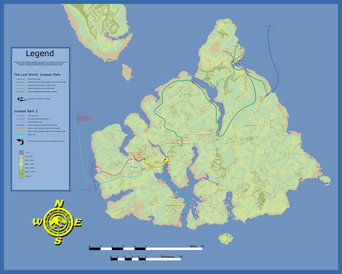

Isla Sorna
La Isla Sorna ―también conocida como la Zona B o Enclave B― es la segunda isla de la empresa InGen que posee dinosaurios. Pertenece a la cadena de islas ficticias conocidas como Las Cinco Muertes. Al contrario de la isla Nublar, donde los dinosaurios estaban enjaulados con alambradas electrificadas para ser exhibidos al público, en la isla Sorna estos podían vagar libremente.
Descripcion
En esta isla se la conoce principalmente porque en ella se crearon los primeros Calvociraptores los cuales alteraron el ecosistema porque podian golpear con la calva y ademas eran carnivoros.Según la película, la isla Sorna estaría aproximadamente a 207 millas de Costa Rica, en el Océano Pacífico. Está a 87 millas de la isla Nublar. Cuando John Hammond planeó el parque, diseñó el lugar para que funcionara como granja de producción. Consta de varios tipos de instalaciones que sirvieron a los trabajadores, científicos y programadores. En el recinto principal se encuentra la administración y los alojamientos de los científicos e ingenieros. Además, está la Administración de Embriones, el lugar donde se desarrollaban las crías, y donde también se llevó a cabo el "Proyecto Spinosaurus", que no estaba en la lista oficial de InGen. En el campamento de trabajadores están los puestos de los empleados y contratistas de InGen, y es donde vivían la mayoría de ellos, ya que era muy caro transportar regularmente a los trabajadores desde Costa Rica. Es un recinto cerrado y electrificado. Dentro está el Centro de Energía Geotérmica, las radios principales, y el control total de la isla Sorna.Actualmente, Isla Sorna está deshabitada, según el grupo Dinosaur Protection Group, dado que entre 1997 y 2001 se introdujeron dinosaurios clonados ilegalmente como Ceratosaurus, Ankylosaurus, Spinosaurus, Corythosaurus, y posiblemente Pteranodon, las cuales afectaron de forma negativa al ecosistema, y los dinosaurios supervivientes fueron transportados entre el 2001 y 2005 a la Isla Nublar, para servir como atracciones al nuevo parque de Jurassic World.
Geografia
Se dice que Isla Sorna fue originalmente un gran volcán que hizo estallar su cima. Las crestas de alta montaña en las costas restringen el acceso a la isla. Sólo unos pocos túneles que el agua había perforado en los lados de las grandes montañas en el este otorgan acceso. Las olas hacen un gemido en las cuevas. La gente local apodó a la isla después de ese sonido, Isla Gemido, 'isla que gime'. Incluso el aterrizaje en helicóptero es difícil; Las grandes corrientes de viento harían muy difícil volar. Los pozos de agua en el norte alimentan el río de la isla, que desemboca en el mar en el lado sureste.
Flora autoctona
- Arbol de Caucho
- Banana
- Haba de Lima
- Helecho de Cadena Gigante
- Hierba de Elefante
- Secuoya
- Soja